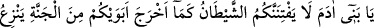
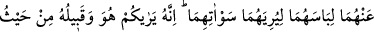
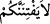

Ahmed, müjdeler olsun sana. Sünnete olan bağlılığından ötürü Allah seni mağfiret etti.”
Ben sesin sâhibine: “Sen kimsin?” dedim. “Ben Cebrail’im, Allah seni, kendisine tâbî
olunan bir önder (imam) kıldı.” diye cevap verdi.
eş-Şir‘a’da şöyle denilmiştir: Elbise giyerken nefsin arzusunu tatmine değil,
bedendeki avret ve ayıp yerlerini örtmeye ve müslümanlara sevimli görünmek için
ziynetlenmeye niyet edilir. Çünkü bu niyetle giyinmek aklı nurlandırır, bulanık
düşüncelerden temizler. Böylece ona nefsâni arzu ve istekler karışmaz. Kişi, bu niyeti
ile mükafat kazanır.
Hayvânî davranışların, hiçbir niyet olmadan yapılan davranışlar olduğu söylenmiştir.
Şu halde akıllı insana gereken, gizli yerlerde de Allah’dan gayrısını anmaktan
çekinmektir.
27. Ey Âdem oğulları! Şeytan, ana-babanızı, ayıp yerlerini kendilerine göstermek
için elbiselerini soyarak cennetten çıkardığı gibi sizi de aldatmasın. Çünkü o ve
yandaşları, sizin onları göremeyeceğiniz yerden sizi görürler. Şüphesiz biz
şeytanları, inanmayanların dostları kıldık.
“Ey âdem oğulları, şeytan, ana babanızı, çirkin yerlerini” yani avret yerlerini
“onlara göstermek için elbiselerini soyarak cennetten çıkardığı gibi sizi de bir
belaya düşürmesin.” Yani, kendilerini aldatarak babanız âdem ile eşi Havva’nın
cennetten çıkarılmalarına sebep olan İblis, sakın ola sizi de bir tuzağa düşürmesin. Sizi
kandırarak cennete girmenize mâni olmasın.
Türlü yalanlarla Âdem ile Havva’yı aldatan İblis’in, onların evlatlarını çeşitli
tuzaklarla kandırması, ayaklarını kaydırması daha da kolaydır. Bu sebeple size gereken,
İblis’in vesveselerine kanmamaktır. Onun tekliflerini kabul etmemektir.
“
” (sizi belaya düşürmesin) cümlesindeki yasak, lafız bakımından şeytanadır.
Mânâ itibariyle ise insanların İblis’e tâbi olmalarını ve onun yüzünden belaya
düşmelerini yasaklamak içindir. Bu ifade tarzı, “Şeytanın sizi belaya düşürmesini kabul
etmeyin” demekten daha etkilidir.
İbn Abbas (r. anhüma)’nın şöyle dediği rivayet edilmiştir: Âdem ile Havva’nın
cennetteki elbiseleri tırnaktandı. Yani, tırnağa benzer bir şeydi. Vücudlarının üzerinde
tırnak gibi yaratılmıştı.
Elbiselerinin soyulması fiilinin şeytana nisbet edilmesi, onun buna sebebiyet
vermesindendir. Yoksa onları elbiselerinden soyan doğrudan o değildir.